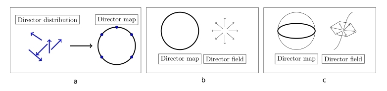

Bachelor's of Science in Physics, 2019 - 2022
I received my Bachelor's of Science in Physics from the University of Southern Denmark in 2022.
Having completed a Bachelor's of Science in Physics, entails having completed a course load of 165 ECTS, which included topics such as:
- Classical Mechanics and Special Relativity
- Atomic Physics and Quantum Mechanics
- Electrodynamics and Thermodynamics
- Condensed Matter and Soft Matter Physics
- Statistical Mechanics
- Electromagnetism and Optics
- Electronics and Semi-conductor Physics
- Mathematical Methods in Physics
- Programming and Deep Learning
- Experimental Physics and Modelling of Physical Systems
Besides the course load, a Bachelor's degree in Physics also includes a Bachelor's thesis, which is a research project that is carried out over the course of a semester, totalling
15 ECTS.
Bachelor's Thesis
My thesis was on the topic of
Smectic Liquid Crystals as Light-Guides.
and was supervised by Associate Professor Franscesca Serra. The thesis was an experimental study of the optical properties of smectic liquid crystals and their potential use as light-guides.
Below is a brief summary of the thesis, and for a more detailed description please refer to the full thesis, and linked above.
The main purpose of the research was to investigate the optical properties of smectic liquid crystals and their potential to self-aggregate into light-guides.
Introductory Theory
Introduction to Liquid Crystals and their Phases
Liquid crystals are a state of matter that is intermediate between a solid and a liquid. They are characterized by their ability to flow like a liquid, but also to maintain some
degree of order like a solid. Liquid crystals are widely used in display technologies, such as LCDs, and have a wide range of applications in optics and photonics.
The order of the liquid is attributed to the geometry of the molucules, which make up the liquid. Looking specifically at prolate spheroids, there generally three phases:
- Isotropic, a: No discernable order in the liquid
- Nematic, b: A discernable directionality of the liquid, often characterised by the
director field
- Smectic A, c: Also contains a director field, as well as a perodic density modulation
in the direction of the director
We're interested in investigating how the liquid crystals react under varying conditions, and therefore we're interested in how the director field changes.
There are generally three modes of director field deformation, which are the splay, twist, and bend modes, seen below in the respective order.
While all these deformation modes are available to the nematic phase, the smectic A phase's layer structures inhibits the bend mode, as it would disrupt the layer structure.
These discussions lead us to the next section of interest: topology and defects.
Topology and Defects in Liquid Crystals
A topological defect is a point in space where the order of the liquid crystal is disrupted. Their origin lies in the demand for a defect, when a vector field
is imposed upon a geometry, in accordance with the geometry's Euler characteristic. The Poincaré-Hopf theorem gives the relation between the defect charge and the Euler characteristic:
\[ \sum_i^N m_i = \chi (V) \]
Where \( m_i \) is the charge of the defect, \( N \) is the number of defects, and \( \chi (V) \) is the Euler characteristic of the geometry \( V \).
As the energy dispersion of the defect has the following relation:
\[ E \propto m^2 \]
half-integer defects are energetically favourable, as they have a lower energy than integer defects.
These defects can be classified into different types, such as point defects
and line defects, while also introducing the concept of the director mapping:

The phase type of the liquid crystal is crucial in defect considerations, as there are additional constraints on the smectic A phase, due to the layer structure, which
prohibits certain behaviours that are allowed in the nematic phase. Investigating this difference by extending the +1 defect seen on figure b into 2D, manifesting as a line defect, however, by noticing
the director map, we can see that it can actually be contracted into a single point on the sphere of the mapping, meaning it is not a true topological defect.
This is the concept of an "escaped" defect. However, the defect escaped into the third dimension by bending the director field, which is prohibited in the smectic A phase,
due to the layer structure, meaning the smectic A phase can sustain stable line defects.
These specific line defects are what we will be trying to utilise as optical fibres.
Anchoring
Anchoring is an important factor in the study of liquid crystals, as it determines the orientation of the director field at the boundaries of the liquid crystal. The anchoring can be
induced by various environmental factors that are under the control of the experimenter, such as the surface treatment of the substrate, the temperature, and the presence of surfactants.
The anchoring can be classified into two main types:
- Planar, a: Anchoring along the major axis of the prolate spheroid
- Homeotropic, b: Anchoring at one of the poles of the prolate spheroid
The energy associated with the anchoring is given by the following relation:
\[ E_{A} = W \cos^2 \left( \theta - \theta_0 \right) \]
Where \( W \) is the anchoring strength, \( \theta \) is the angle between the director field and the anchoring director, and \( \theta_0 \) is the angle at which the director field is anchored.
This relation is the energy cost of deviating from the anchoring direction, and is minimized when the director field is parallel to the anchoring direction.
Surface Tension, Interfaces, and Surfactants
Surface tension is the manifestation of the energy cost of creating an interface between a bulk liquid and some other non-miscible liquid/gas.
Assuming a flat interface, the molecules at the very top of the non-mixing interface, will experience a net attractive force towards the bulk liquid,
due to the intermolecular forces between the molecules.
This surface tension can be altered by the introduction of surfactants, which have a hydrophilic and a oleophilic end, acting as an intermediary between two non-miscible liquids.
The introduction of surfactants to two non-miscible liquids results in a lowering of the surface tension, but it can also create micelles, which are structures that encapsulate
the surfactants in a way that the hydrophilic end is facing the water, and the oleophilic end is facing the oil.
A measure of concentration of surfactants is the critical micelle concentration (CMC), which is the concentration at which half of all surfactant molecules are aggregated in micelles.
A factor in this arrangement is the Krafft temperture, which is described as the lowest temperature at which micelles readily form. Below the Krafft temperature, the solubility
is below the CMC.
By introducing surfactants in a specific concentration, with water as the solvent, we can drive instability between the interface of the two liquids, which can result in the formation of
stable line defects from the smectic A phase, which can be used as light-guides.
Optical Guiding
Considering the case of a uniform core fibre, the light is guided through the fibre by total internal reflection. The concept can be derived from Snell's law of electrodynamics:
\[ \frac{\sin(\theta_T)}{\sin(\theta_I)} = \frac{n_1}{n_2} \]
Where \( \theta_T \) is the angle of the transmitted light, \( \theta_I \) is the angle of the incident light, and \( n_1 \) and \( n_2 \) are the refractive indices of the two media.
Now considering the case where the light moves from an optically dense material to a less optically dense material, from which it follows: \( n_1 > n_2 \). The critical angle \( \theta_c \) is
then given by:
\[ \theta_c = \sin^{-1}\left(\frac{n_2}{n_1}\right) \]
The critical angle is a measure of how large the incident angle can be, before refraction ceases, and there is total internal reflection, and is given by the criteria:
\[ \theta_I > \theta_c \]
Experimental Set-up
Cell Preparation
An example illustration of the cell used for the experiments is shown on the right. The cell consists of two glass substrates, seperated by a spacer.
Before joining the two substrates, the liquid crystal is introduced as a droplet, shown as a blue ellipse in the figure. Following the introduction of the liquid crystal,
the cell is closed, secured with a clamping mechanism, and a solvent of surfactants, shown as a blue rectangle, is introduced into the cell via capillary action.
A variety of anchoring schemes were utilised. The planar and homeotropic anchorings were achieved mechanically and chemically, respectively (refer to thesis).
However, more complex anchoring schemes were also utilised, in which the top glass cell had a patterned surface. Two patterned surfaces were used:
One with an array of concentric circles, and one with simple linear, parallel grooves. These were used to investigate whether they could induce directionality of the formed fibres.
Retraction Method
A novel approach to intialise the self-formation of the fibres was the retraction method. The cell preparation is identical, however, before the surfactants are introduced into
the system, a temporary force is applied to the top of the cell. The causes the liquid crystal to spread out, after which the force is removed, and the liquid crystal retracts back
towards the center leaving a "retraction annulus", in which there are still remnants on the liquid crystal.
Results
Retraction, Substrates, and Micro-Patterned Groves
Below is the image of an azimuthally formed fibre, created with the retraction method, with untreated substrates, and no micro-patterned grooves, which produces random planer anchoring.
This is a prime example of the quality fibres formed with the retraction method.
To investigate whether the micro-patterned grooves could induce directionality in the fibres, the same retraction method was used, however, the top substrate had a patterned surface.
We set forth the null-hypothesis that the fibres form uniformly, such that the grooves have no effect on the formation. If this is indeed the case, a histogram of measured
angles between the fibre and the groove should prove to be uniform. A Kolmogorov-Smirnov (KM) test was used to test the null-hypothesis.
Differing concentrations of the surfactants were used, and below are two examples from the data extracted with an array of concentric ring micro-grooves.

As been be seen on the data and the results of the KM-test, the test is inconclusive, but it cannot be fully rejected either.
Another factor that could have a significant impact on the directionality of the fibres is the flow orientation of the surfactant solution.
The flow orientation is the direction in which the surfactant solution is introduced into the cell.
We test this by introducing a set of a linear, parallel grooves on the glass substrate, and perform two experiments: one with the flow orientation parallel to the grooves,
and one perpendicular to the grooves.
The same KM-test is performed with an identical null-hypothesis, and the results are shown below.
The results of the KM-test show that the null-hypothesis can be rejected, and that the flow orientation has a significant impact on the directionality of the fibres.